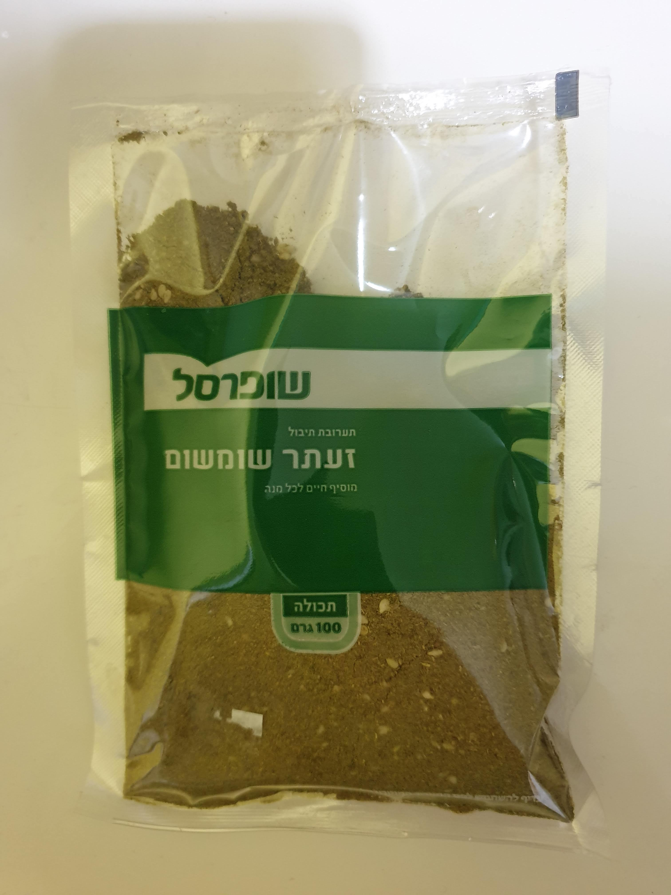
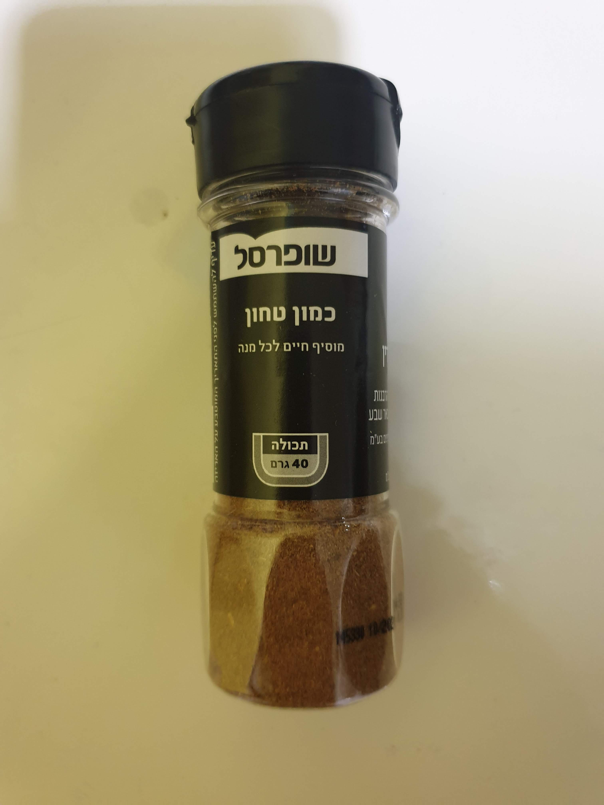
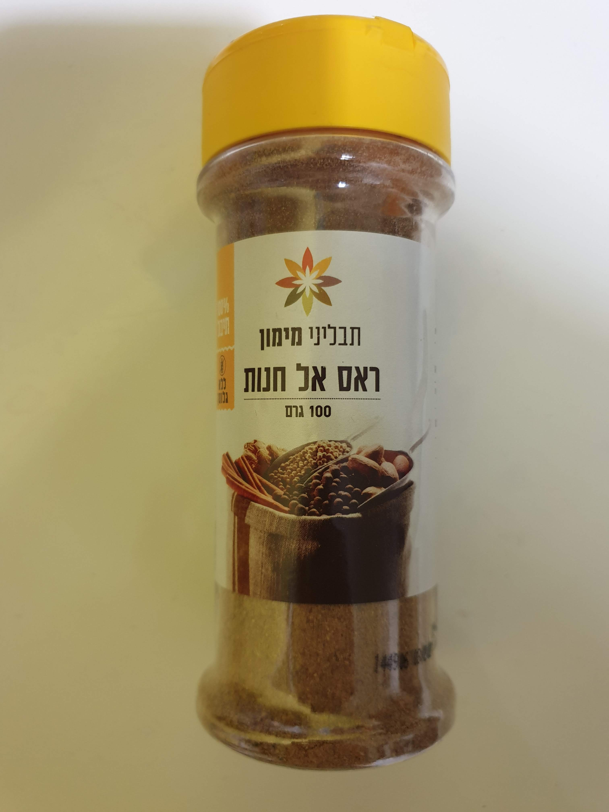
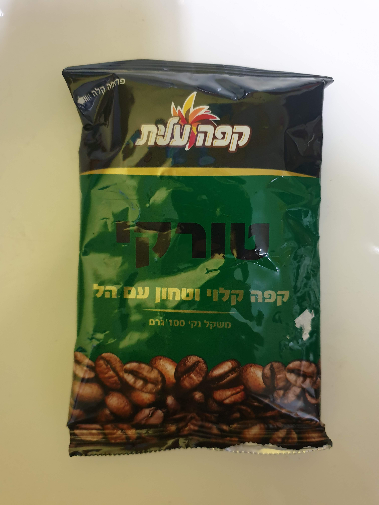

|  | This is Za'atar. It's a very common mixture - probably as common as salt and pepper. It is based on a plant called Origanum syriacum, which gives it its unique tatse. Use it on chicken breast or fresh salads, or even on bread with white cheese. |
|  | This is Cumin. This spice also bears a very distinct taste. It goes great with chickpeas (Hummus) and chicken too. I also add it to Bolognese sauce, to give it an extra kick. |
|  | This is Ras El-Hanout, and this I know none of you ever received from me. The name comes from Arabic, which means "head of the store" - as in, that's the best spice there is, so it is presented at the front. It's made from up to 15 different ingredients, and so each store and compamy make a different variation. It goes great with chicken and meat-balls, veal-meat and long-cooked meats. |
|  | This is Turkish coffee, more commonly referred to as "Black Coffee". It's made from ground and unfiltered coffee beans. This specific one also has cardamom, which gives it an extra kick. Preparation is simple: put one heaping teaspoon of coffee in a cup, and pour boiled water over it. Stir well and add sugar (I add half a teaspoon). Let it rest so all the coffee-parts drop to the bottom of the cup, then drink. You do not drink the coffee parts. |